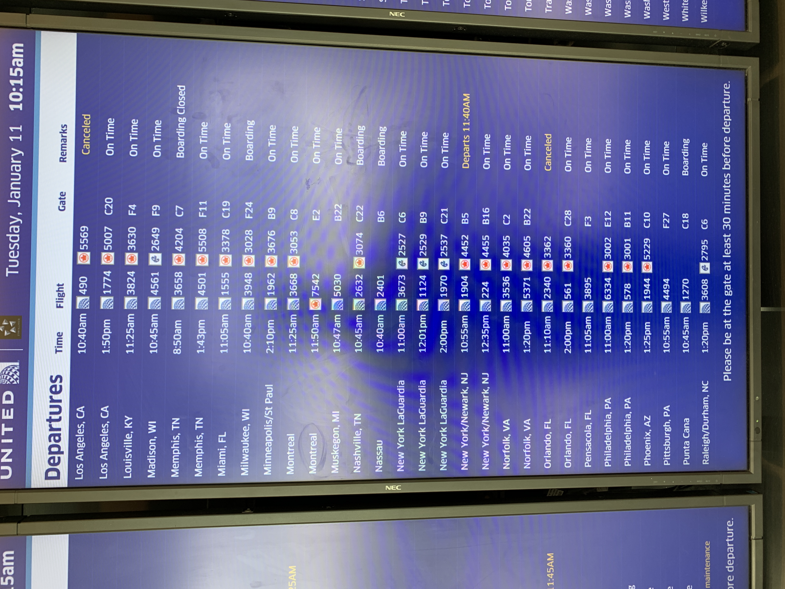
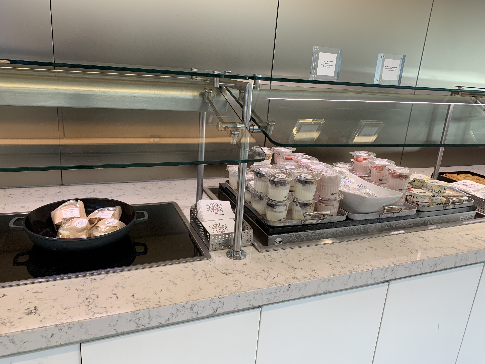
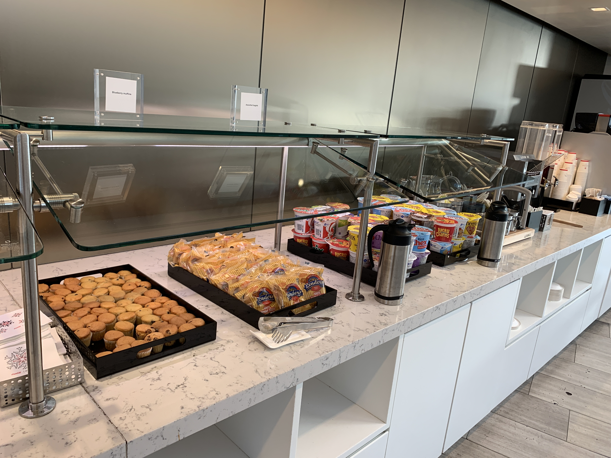
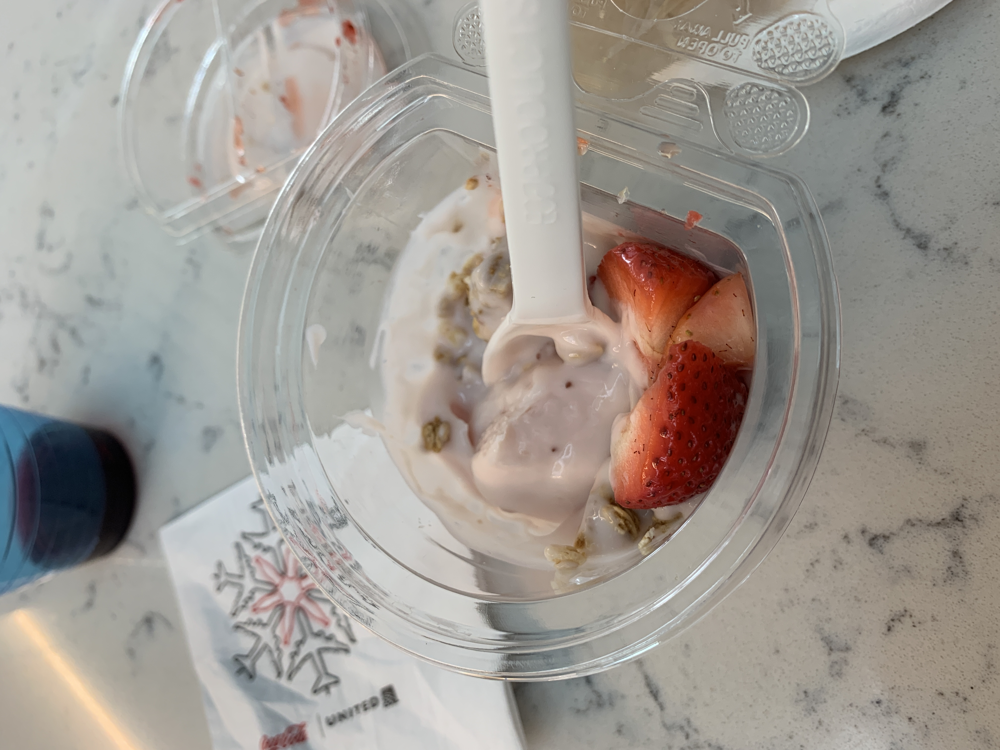
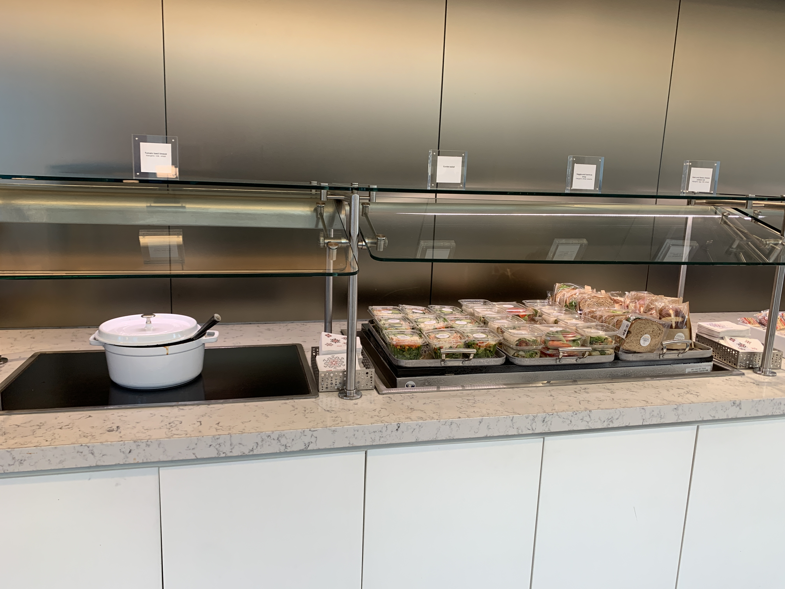
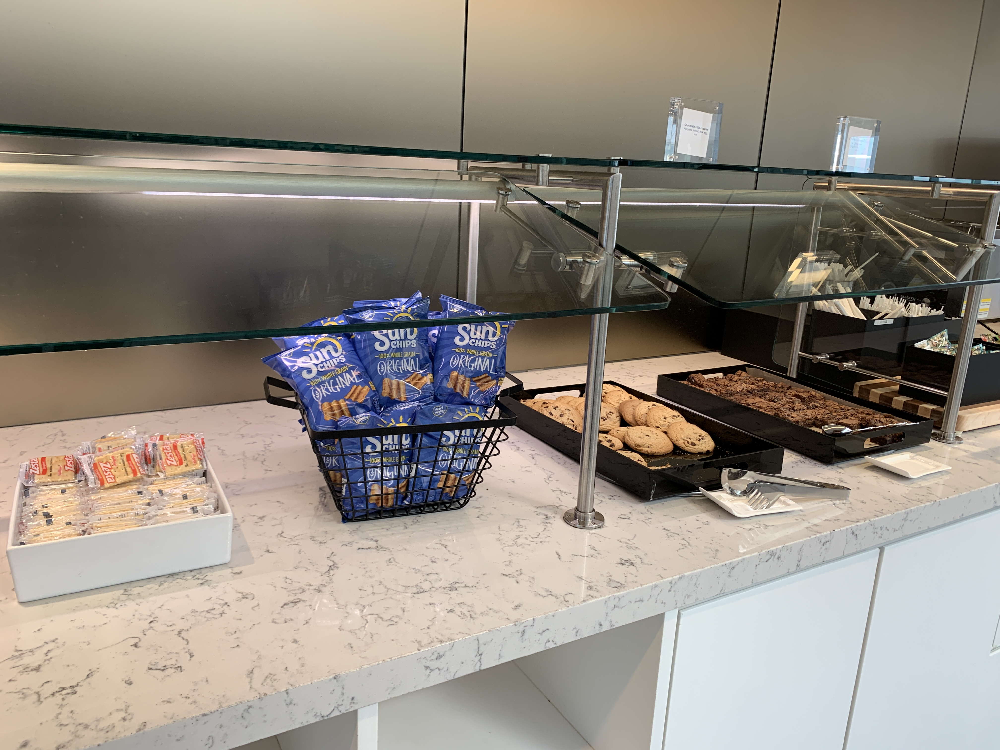
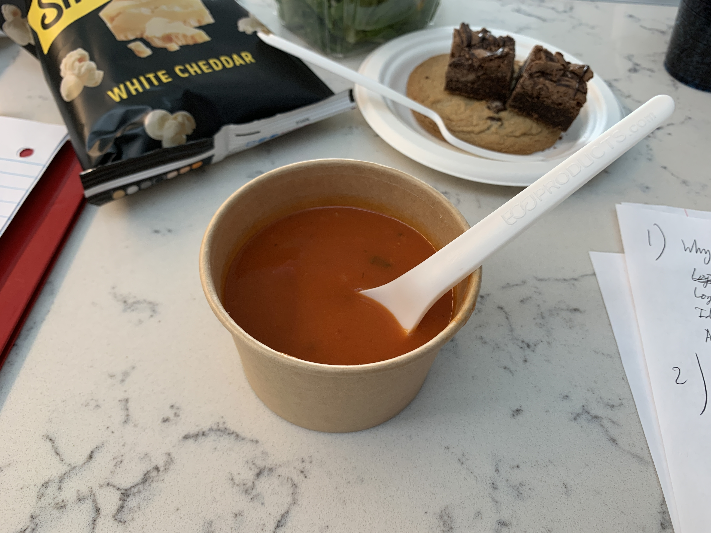

Below is Post 2.
United Club B6, Chicago O'Hare (January 2022)
I visited this lounge back in August but still decided to spend my 4.5-hour layover here. There were several reasons why I decided to spend a layover here, most important of which I wanted to check out the food offering. It doesn’t diminish the fact that I needed to do some homework assignments, but I figured it would be easier to do that in a lounge.

It’s nice to know that my flight isn’t affected by the recent Omicron outbreak, causing crewing issues at United. Although I’m guessing the previous flight to Los Angeles was cancelled for that reason.

I’m glad that they had hot breakfast sandwich options, parfaits, and hard-boiled eggs.

They also had muffins and bagels, though neither seemed to be heated (nor was a toaster provided). I may or may not have taken a cup of cereal to snack on (milk is also available).

I thought the parfait was quite good.

The breakfast sandwiches were replaced with a tomato soup. The parfaits and eggs were replaced with salads (with no dressing), cold wraps, and cold sandwiches.

Crackers and the same Sun Chips that I had back in elementary school were offered, as were cookies and brownies. I lost count of how many cookies and brownies I had (those were so good! I’m only half-joking on losing count as I just had a few… of each).

I just grabbed some soup and a bag of popcorn. The soup was not something I will go back for.
Well, that's enough for this stop in Chicago. Time to go to the gate. Be back in 14 hours (though I won't visit the lounge again)